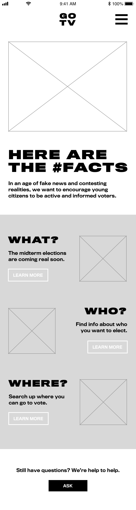
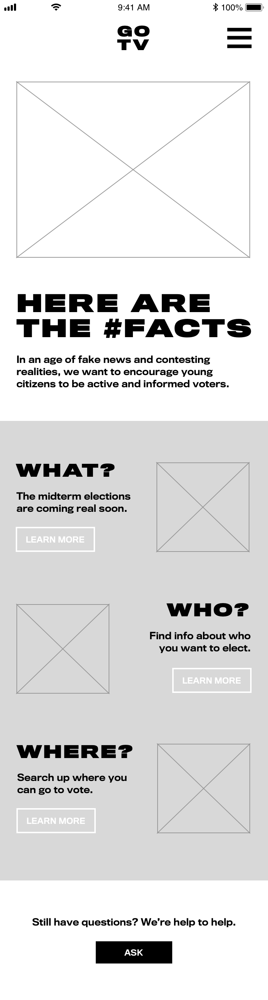

Interaction + Experiential
Saccharine Journey
World of Olfactory
The Noohspaper
Graphic Design
Get Out The Vote Branding
Greek Mythology Cards
Korean Tarot Cards
Howdy! I’m Jooyoung Park, an enthusiastic illustrator and visual designer with a
desire to create delightful, human-centered interactive experiences and designs.
Sometimes, I code using HTML/CSS/Javascript, illustrate,
and make lively motion graphics.
Contact me at jpark96@pratt.edu!


 
